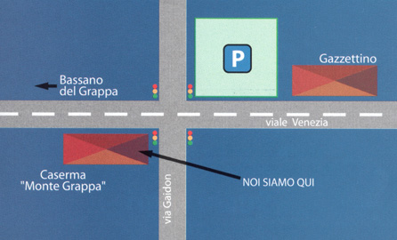

Come Raggiungerci
Il ristorante Sakura si trova ad appena 1 km dal centro di Bassano del Grappa, a due passi dalla caserma "Monte Grappa".
Facilmente raggiungibile con i mezzi pubblici o in auto: un ampio parcheggio vicino al ristorante è a disposizione dei clienti.
